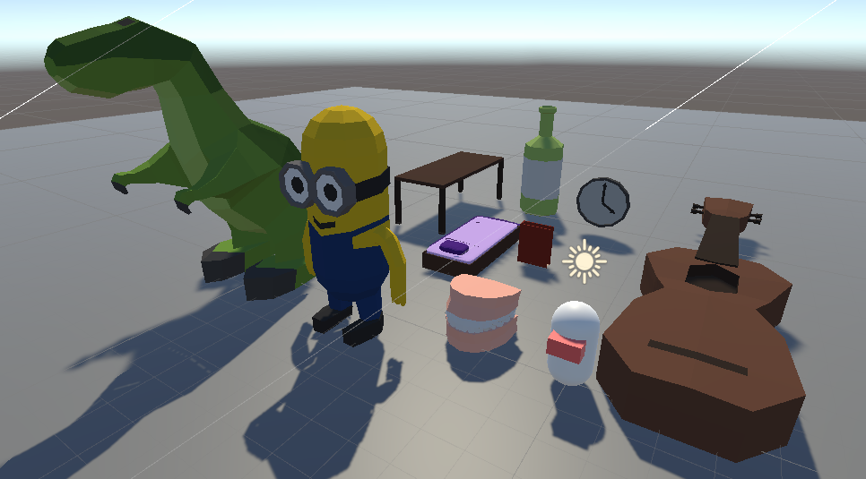
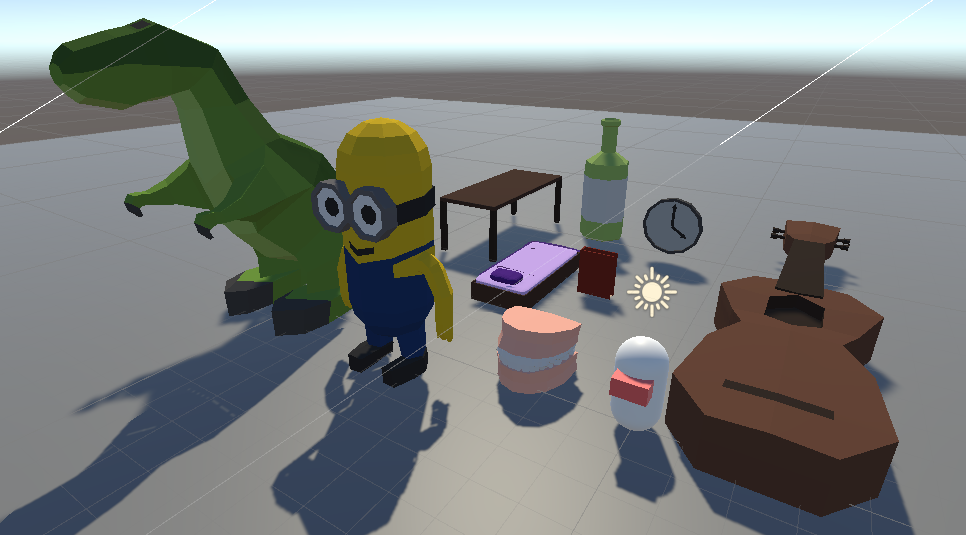

Flat Spot
This casual motorsport management game was the centerpiece of my Bachelor's Thesis in Game Engineering, and was developed solo in Unity 3D. The biggest emphasis layed on the AI programming, making strong use of concepts like Finite State Machines and Utility Based AI. However, I also did the Gameplay programming, 3D modelling and shader programming (using Unity Shader Graph), as well as the implementation of sound effects using Wwise.
I wanted the players to experience motorsport like never before: very simple. In this exiting, fast-paced management game you can be team principal of your own team, upgrade your car with newly built parts and train your drivers to compete in races and win the championship. Use your drivers Special Abilities to gain an advantage over other drivers on track and leave them in the dust.
Visit Flat Spot on Steam
 
